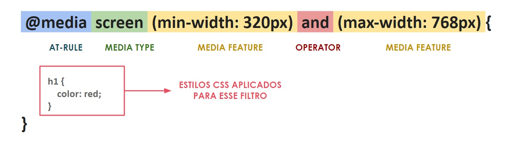
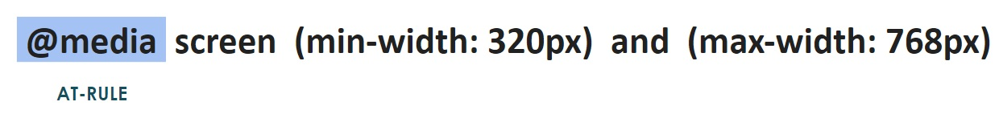
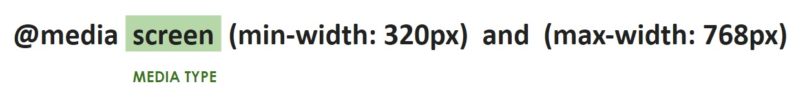
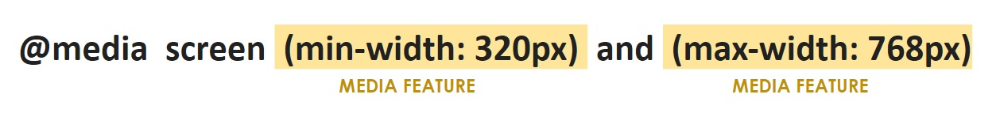

Trilha CSS - Responsividade
Introdução ao design responsivo
Técnicas para responsividade
- Ideia de grids fluídos;
- Técnica de imagens fluídas;
- Media Queries.
Design Responsivo
Conjunto de melhores práticas para que um layout responda ao dispositivo que está sendo usado para visualizar uma página web.
Layouts Flexíveis
Uma das maneiras de se construir layouts flexíveis é usando o Grid Layout; Flexbox e Múltiplas Colunas, combinado com unidades de medidas relativas, incluindo as relacionadas à viewport.
Multicolunas (multicol)
Especifica-se em quantas colunas o conteúdo será dividido e o navegador irá calcular o tamanho delas conforme o tamanho da tela mudar.
Flexbox
Através do flexbox, os elementos da página serão capazes de encolher ou crescer, distribuindo o espaço entre os itens de acordo com o tamanho do container.
Grids flexíveis
Outro método extremamente eficaz de se criar layouts responsivos é utilizando o Grid Layout juntamente com a unidade de medida fr, atribuindo o espaço disponível do container entre as colunas e linhas do grid.
Meta tag viewport
A meta tag viewport irá informar para os navegadores que eles devem utilizar a largura da janela do dispositivo para exibir a página web, fazendo com que os navegadores as redimensionem melhor, ajudando na responsividade.
- width=device-width: sobrescreve a configuração padrão dos navegadores para a largura da janela
- initial-scale: define zoom inicial da página
- height: define altura específica para a viewport
- minimum-scale: define o nível mínimo de zoom
- maximum-scale: define o nível máximo de zoom
- user-scalable: impede que o usuário aplique zoom na página caso tenha o valor definido como no
Media queries
Recurso que permite aplicar propriedades do CSS somente para algumas regras de tipos de mídia específicos.
Estrutura das media queries

@media (at-rule)

Regra usada para identificar o tipo de mídia que uma página está sendo visualizada, informando os recursos que esse tipo de mídia suporta e os operadores que podem ser combinados para misturar algumas condições.
media type / tipo de mídia

Define o tipo de mídia que os estilos CSS devem ser aplicados.
-
all: corresponde a todos os dispositivos;
-
screen: corresponde a dispositivos com telas integradas;
-
print: corresponde a documentos que são uma pré-visualização de impressão, ou em qualquer mídia que será voltada para imprimir;
-
speech: corresponde a dispositivos que leem o conteúdo de forma audível, como um leitor de tela, por exemplo.
media features / mídia recursos

Configura com quais recursos de mídia se quer combinar para aplicar determinados estilos.
-
min-width/min-height/max-width/max-height/width/height: detecta a largura e altura da viewport;
-
orientation: detecta se o dispositivo está em modo retrato ou paisagem;
-
hover: indica que a página está sendo acessada através de um mecanismo de ponteiro, como um mouse;
-
pointer: detecta quão preciso é o ponteiro (grosso, fino, etc), ajudando a detectar touchscreen, mouse, etc.
media features: e muito mais...
Existem media queries voltados para:
- Viewport/características da página;
- Qualidade da exibição;
- Cores;
- Interação;
- Vídeo;
- Script;
- Preferências do usuário.
operators / operadores
É possível combinar, através de operadores lógicos, as media features para atender as condições para aplicar os estilos
- AND:deve atender a todas media features (recursos de mídia);
- OR:deve atender, no mínimo, uma das media features (recursos de mídia);
- NOT:nega as condições aplicadas, invertendo todo o significado do media query.